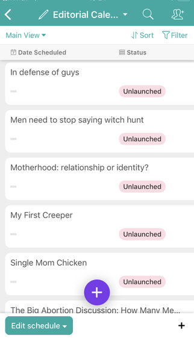

2019-02-07 / In categories Posts
Dear Stumpers:
I’m about to let you in behind the scenes of StumpedMom.com. While the casual or even careful reader could never be blamed for assuming I pull this entire website out of my ass. I try to organize my ideas and put them out in an organized and orderly fashion. I use an Airtable (Please sponsor me) spreadsheet to organize my work from the idea stage, through to publishing. I should probably be plugging in and tracking metrics but meh.
 Sometimes I have more ideas than I can write about, at once and to get myself to focus I put those ideas into a list called “undeveloped”. On days like today, when I feel like writing but I’m not fired up about anything in particular, I linger over this section of the list and see which nuggets I might be able to massage into life.
One entry into particular jumped out at me today.
“My First Creeper”
When I made this entry I was totally anticipating that in the very near future, my presence as a woman on the internet who openly, talks about sex, was going to attract some boundary crossing weirdos. But something strange has happened. StumpedMom.com is now a full four months old. I have done a lot of sticking my neck out and yet no verifiable, off the rails, creepers have surfaced. No one has even used the “threats” form on my contact page to register an official threat. Nobody loves me enough to hate me or hates me enough to love me.
So what gives? How do I explain this apparent lack of predatory attention. Feedback on my blog does come in at a pretty regular clip. Sometimes I get public shout-outs but most often I get dm’s from men on Twitter. Most of them try to use my blog and my presence online as an excuse to try and get personal information from me or to get me to sext with them. I will grant that my personal threshold for creep may be a little high but so far none of these dudes has gotten out of control. I don’t answer everyone who sends me a message. That has more to do with the timing of a first messages arrival than anything. If you say “hi” at a good time, when I am available I am likely to answer.
I have some experience with weirdos and creepers. Waaaaay back in highschool, before social media was a thing, I pissed of the wrong weirdo and got myself a stalker. I acquired this stalker in ta rather unremarkable teenager fashion, by participating in a group slandering the wrong person at basement gathering.
This person reacted by launching a months long harassment campaign against me and those closest to me. She spammed my email inbox, she scrawled epitaphs on our high school the bathroom walls and phoned in death threats to my family from a pay-phone at all hours of the night for months on end. Sometimes she snail mailed her nasty letters and at one point she even filed a false police report against me, in which she claimed a whole different person’s identity and said I had assaulted her. She was the analog version of of a twitter mob leader. The situation was eventually resolved when her mole and chief accomplice was overcome by a wave of remorse and confessed to the school administrators. The whole debacle taught me a few lessons that I believe have been serving me well as a blogger.
First of all, I avoid slandering people as a means of getting attention.You would think this would be a lesson all adults know, but my recent observations of social media show that its a slander machine.
The measures I have taken to protect my identity (even passing up offers for free stuff) have all been made with this cautionary tale in mind and I started this project prepared to walk away from it at any time. No online argument or internet beef is worth putting my family through the anxiety that my last stalker caused.
I follow my own advice. When I interact with people I make my intentions clear. I tell them that I make myself available to readers for feedback but I am not available for developing any kind of relationship. If they push or make me feel uncomfortable I never escalate, I politely excuse myself, ignore or block and then I move on.
I am well aware that I have been exercising skills that women are socialized to learn in order to avoid some of the worst outcomes of misogynistic rape culture. These are our ways of getting out without getting hurt. Don’t cause a fuss, don’t trigger his entitlement etc. Victims are never to blame for being attacked but there are ways to minimize risk and sense bad situations and find a way out before you get in too deep.I might be out to change the world, one blog post at a time but I still have to function in it just the same. So far, this little artistic endeavor has bolstered my faith in people. Thank you stumpers for reading me and hearing me and respecting my boundaries. I look forward to continuing to interact with you.